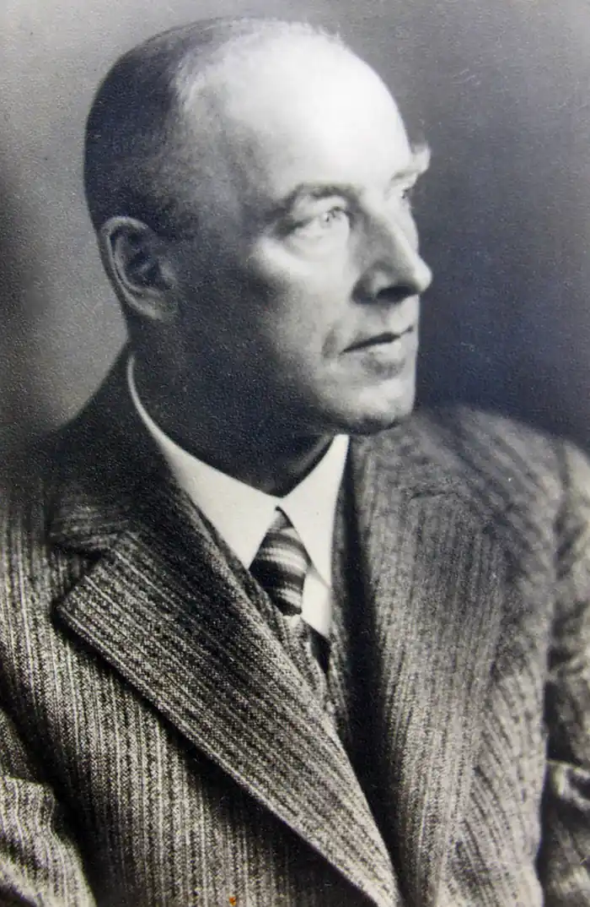

Ханс Кон (Hans Kohn; 15 вересня 1891 — 16 березень 1971) був єврейським філософом і істориком.
Народився в Празі в габсбурзької імперії. Був захоплений в полон під час Першої світової війни і жив в Росії протягом п'яти років. У наступні роки він жив в Парижі і Лондоні, працював в сіоністських організаціях і писав книги.
Він переїхав до Палестини в 1925 році, але відвідував США часто, в кінці кінців іммігрував в 1934 році викладати сучасну історію в Коледжі Сміта в Нортхемптон, штат Массачусетс. З 1948 по 1961 рік він викладав в Міському коледжі Нью-Йорка. Він також викладав в Новій школі соціальних досліджень, Гарвардській літній школі. Він написав безліч книг і публікацій, в основному на теми націоналізму, панславізму, німецької думки і іудаїзму, і був одним з перших засновників Інституту зовнішньополітичних досліджень в Філадельфії, штат Пенсільванія, де він помер. Кон Ганс (Kohn H.) — голова організованого в США Міжнародного товариства з вивчення історії ідей, професор Нью-йоркського коледжу. За плечима Кона — сорокарічний досвід наукової роботи, два десятка монографій. Один тільки перелік назв його останніх праць: "Картина світу в історичній перспективі", "Революції і диктатури", "Пророки і народи" ","Двадцяте століття. Виклик Заходу і його відповідь","Націоналізм, його роль і історія", свідчить про те, що Ганс Кон вважається істориком-теоретиком, істориком-соціологом. Його головним дослідженням в цій області книга, що вийшла в Америці сім'ю виданнями і перекладена на багато мов "Ідея націоналізму". в останні роки професор зайнявся застосуванням своєї методології до історії окремих країн. Так з'явилися дві книги Кона: "Дух сучасної Росії" і "Основи історії сучасної Росії". Перша являє собою об'ємну хрестоматію, в якій зібрані тривкі з творів П.Я. Чаадаєва, М.П. Погодина, А.Міцкевича, К. Гавлічек, Ф.И. Тютчева, А.С.Хомякова, В.Г. Белинского, Н. Г. Чернишевського, А. І .Герцена, Н.Я. Данилевского, В.С. Соловьева, В.І. Леніна, Н.А. Бердяєва і Г.Федотова. Тексти супроводжуються коментарями Кона, передмова і перша глава викладають його загальний погляд на хід російської історії. У другий книзі Кон більш докладно аналізує основні етапи і рушійні сили російської історії і також намагається підтвердити свої висновки різними історичними свідченнями